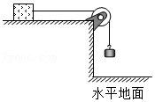

2015年北京市中考物理试题 · 选择题 第16、17、18、19题
（多选）16．（2分）下列说法中正确的是（ ）
A．固体很难被压缩，是由于分子间存在斥力
B．水和酒精升高相同的温度，水吸收的热量较多
C．用干手器吹出的热风吹刚洗过的手，可以加快手上的水蒸发
D．打开酒精瓶的瓶塞后，教室里弥漫着酒精味，这说明酒精分子不停地运动
（多选）17．（2分）下列说法正确的是（ ）
A．如果苹果在下落的过程中，速度越来越大，则苹果受力是不平衡的
B．将水桶从地面上提起来，手对水桶的作用力大于水桶对手的作用力
C．木箱静止在地面上，木箱对地面的压力与木箱所受的重力大小相等
D．沙狐球离开手后，在水平面上滑行越来越慢，是由于沙狐球受到阻力的作用
（多选）18．（2分）下列说法中正确的是（ ）
A．核电站发电时将核能转化为电能
B．通电铜导线中的电流方向与该导线中自由电子定向移动的方向一致
C．交流发电机是电磁感应现象的应用，正常工作时将电能转化为机械能
D．将能自由转动的小磁针放在磁场中的P点，小磁针静止时，小磁针N极所指的方向就是P点磁场的方向
（多选）19．（2分）如图所示，水平台面由同种材料制成，粗糙程度均匀，在它上面放着质量为m1的木块，将木块用轻绳跨过定滑轮与m2的钩码相连。木块在平行于台面的轻绳的拉力作用下做匀速直线运动，运动一段时间，钩码触地后立即静止，木块继续滑动一段距离停在台面上。绳重、轮与轴的摩擦均忽略不计，下列说法中正确的是（ ）

A．木块匀速运动的过程中，木块的机械能越来越大
B．木块匀速运动的过程中，木块和钩码所受的重力都不做功
C．钩码触地后木块继续滑动的过程中，木块的动能越来越小
D．钩码触地后木块继续滑动的过程中，木块所受摩擦力大小为m2g